SocioScheduler V1.0.0
All in one Multi-Activity Scheduler for Instagram, Facebook & Twitter
Features
SocioScheduler is a single platform to place your multiple social media accounts on auto pilot, and also to promote how well you relate with your clients and followers.
With a clean & responsive design, SocioScheduler offers a sophisticated dashboard with content rich features such as schedule post, auto DM,auto post text, links, videos and images, auto follow back and unfollow, total statistics, and much more. This aids better administration of your all you social network accounts.
SocioScheduler allows you post contents at a scheduled time all your multiple social network accounts.
Effective platform notification system are put in place, in order to keep you up to date about all activities.
Currently, SocioScheduler provides support for Facebook (including Facebook Pages & Groups), Instagram & Twitter Management.
Features
- Elegant Design: Fully responsive design Built with bootstrap
- Core Feature: The following is an outline of its basic feature.
- Supports scheduling of Posts to all accounts at a specified time. (includes Image & Video) Upload
- Supports scheduling of Auto Direct Message to new followers on your account.
- Supports scheduling of Auto follow back and auto unfollow on Twitter and Instagram
- Provides support for smiley :)
- Coupled with a File Manager, you may upload, manage and modify your Images & Videos on the platform directly, and store for later use.
- Schedules are created by admin with a support for statistics and account management .
- They are displayed with a neat & responsive interface. Users are able to preview posting schedule and account details.
- Support multiple social media accounts.
- Provides statistics/charts to monitor activities monthly on all Social Accounts.
- Security: Fully secured from all manner of web compromise. Provides screen lock feature.
- Supports Multiple Social Media Accounts: SocioScheduler supports multiple facebook,instagram and twitter accounts.
- ...and much more
Installation
To install SocioScheduler on your web server or hosting, make sure it meets these minimum requirements:
- PHP >= 7.0
The following extensions are required! Visit your server provider to enable them before you proceed.- fileinfo extension
- gd extension
- mbstring extension
- json extension
- If you are using a cPanel hosted server, you may do the following to configure your PHP software
- On your cPanel Main Page, Click on Select PHP Version | Extensions.
- Click the Version select box and select php version 7.0
- Click on Set as Current.
- In the check box immediately below, chose the above required extensions
- Click save.
- Go back to cPanel Main Page, Click on MultiPHP Manager
- Select the domain to the Script
- At the top right, open the dropdown menu tagged PHP Version, and select ea-php70
- Then click Apply.
- Mod Rewrite Module Enabled
- MYSQL >= 5.7
New Installation
- Unpack the archive and upload to your web server and extract it into your root directory e.g /public_html folder. (You cant install it in sub directory, either install it on main domain or sub domain).
- Create a new MySQL database from your cPanel or phpMyAdmin (note the details of the database, you will be needing it later on in the documentation. Import the file socioscheduler.sql located in the root directory of the site.
- Setting up Mail Server - (A mail server setup is required by the script for sending email. By default, the script will try to use your server's mail function. But we highly recommend to utilize an external mail server to procees your email. In case you have a MailGun account already setup with a domain, kindly skip to the next step.)
- Create a new Mailgun account from here
- You will need to add your domain. (We will assume that you have already registered a domain name from a domain registrar (e.g GoDaddy)
- Now visit your mailgun dashboard, click on Add Domain button.
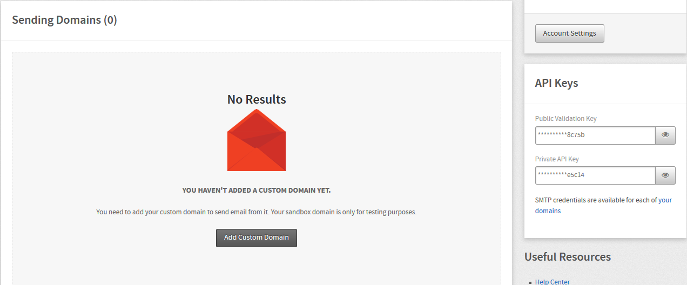 - Next enter the domain name you want to add into the domain name field on the page.
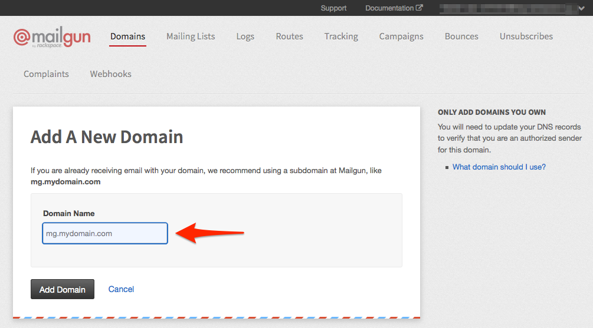 - After you have entered your domain name, click on the add domain button.
- The next page will provide you with the DNS records required for your domain to be verified with Mailgun. This information is also available in the domains section of the control panel by clicking on a specific domain.
- If you need assistance getting your domain verified have a look at this help center article.
- Note down your MailGun credentails (Domain Name & Secret Key, you will be needing it at step 6
- Setup Your Site Environment Configuration
- Go to the app'sroot directory, and open the .env file. If you are viewing .env file from cpanel it will be hidden, select show hidden files while opening file manager.
- Change app details from .env file.
- APP_NAME=<Your Site Name>
- APP_TIMEZONE=<Your Country/State Timezone>
- Scroll to the BOTTOM of this page, to determine your timezone. However, you may use "UTC" as your timezone, if you were unable to determine it.
- APP_URL=<Your Site URL>
- Change database details from .env file. Note that your database user should be given full rights.
- DB_HOST=<Your Database Host Address>
- DB_DATABASE=<Your Database Name>
- DB_USERNAME=<Your Database Username>
- DB_PASSWORD=<Your Database Password>
- Change the MailGun credentials (Important for Sending Mails). Kindly refer to step 3.
- Change the value of MAIL_DRIVER to 'mailgun', without quotes. If you prefer using the custom server function for sending mail, you may change the value to 'sendmail' without quotes.
- MAILGUN_DOMAIN=<Your domain name previously setup with mailgun in step 3>
- MAILGUN_SECRET=<Your mailgun secret> Please refer to step 3. If you do not have it yet.
- Really Important! Setup cronjob on your server, and add the following line to your Cron entries.
* * * * * php /path-to-your-script/artisan schedule:run >> /dev/null 2>&1- Note! Without this properly setup, the site may not function well.
- If you are using cPanel, simply go to its home page, click on Cron Jobs from the menu and add the equivalent of the following.
- * * * * * /usr/local/bin/php /path-to-your-script/artisan schedule:run >> /dev/null 2>&1
- For other servers, kindly contact server operator or online support forum to learn how to setup your cronjob
- Connecting With Facebook Kindly follow the steps below inorder to connect your script with facebook!
-
Visit https://developers.facebook.com/apps to create a new app.
Click on Create App
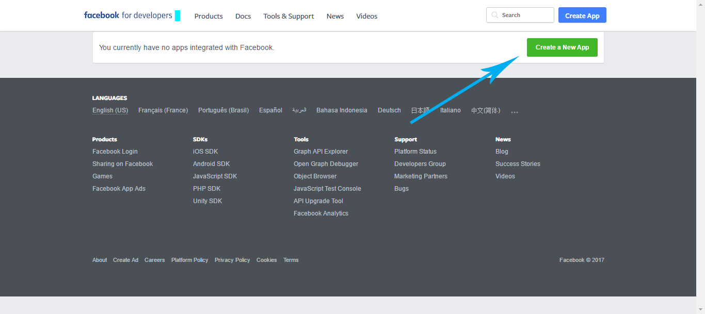 -
Input your new App Details and click on Create.
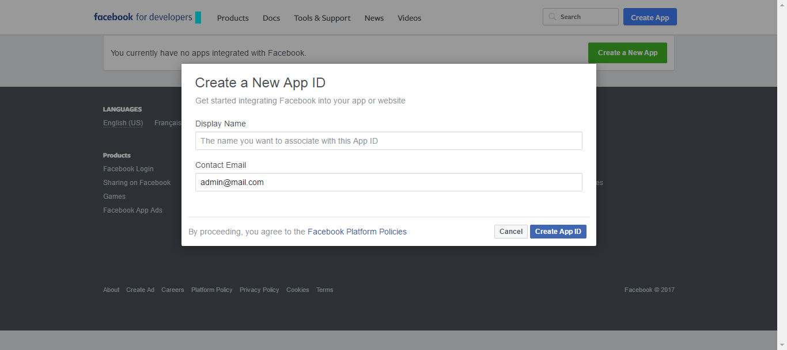 -
At the left side bar, click on Add New Product
Select Facebook Login, click on Setup
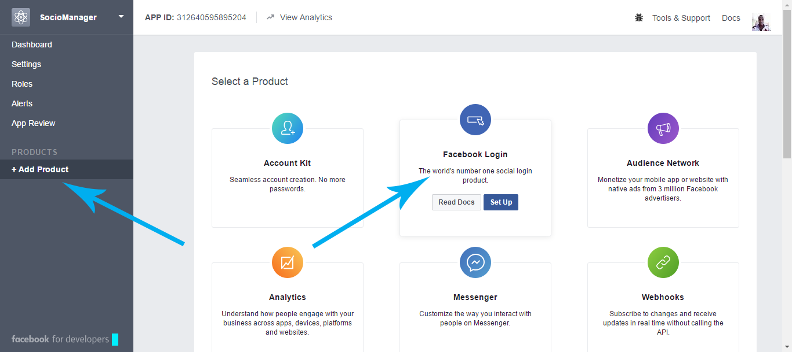 -
Click on Web
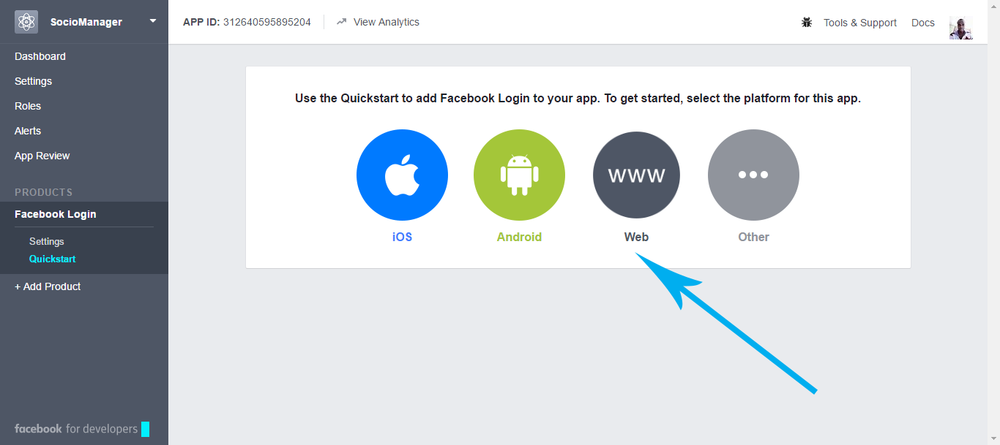 -
Input the url to your script, click on Save Changes.
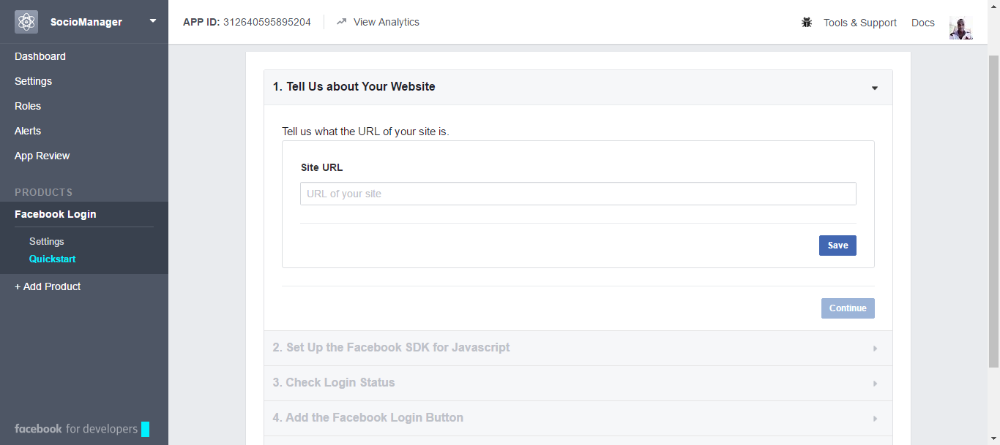 -
Click on the Settings submenu on the left bar.
Turn on the switches as inlustrated in the following picture.
In the Valid OAth Redirect Url, input http://<your-domain>/facebook/callback
Click on Save Changes
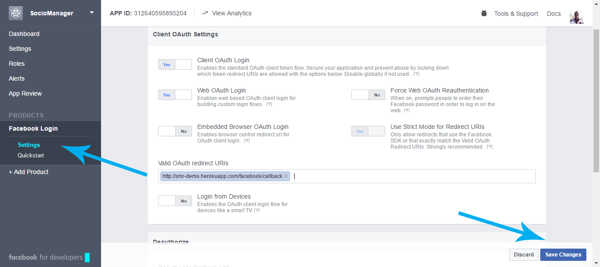 -
Next, on the left side bar click on the Settings submenu, as shown in the Image below.
Type in your App Domain, click on Save Changes.
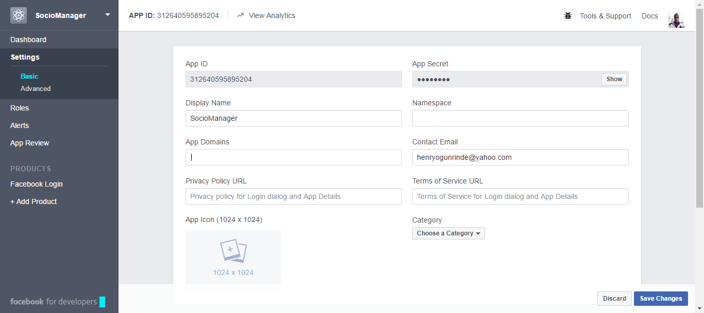
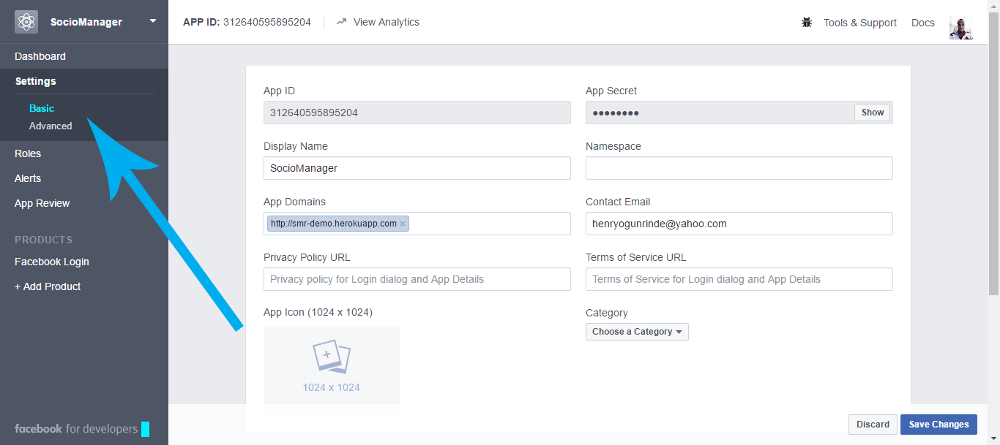 -
Now, to Setup your App with all the Multiple Accounts you will be using with the script.
You will need to refer back here in order to add more facebook accounts in the Future.
If you are going to be using only this account used to create the App, you may skip to the next step.
Click on Roles on the left side bar.
Under the Testers dialog, click on Add Testers.
If the new account is a Friend to the current account, input the name.
If not, Input the username of the Account
Click on Submit.
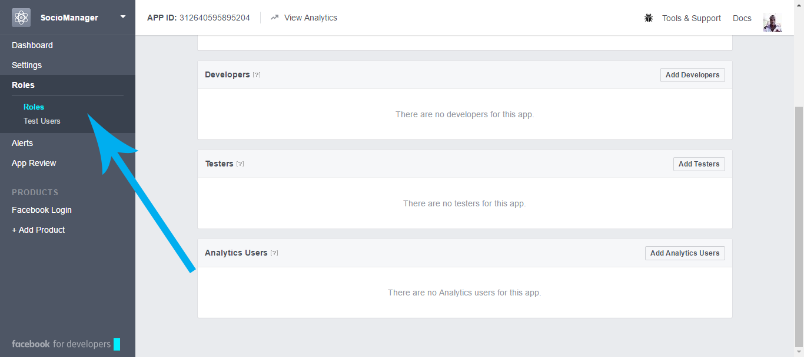
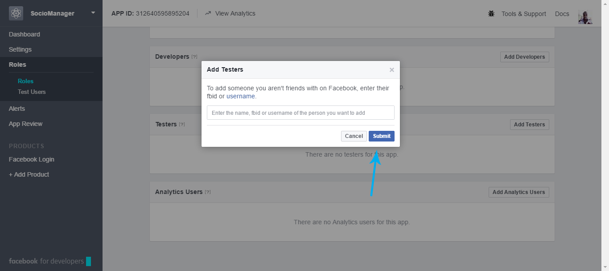 -
Just a few step more. At this stage you will need to obtain your app details.
Click on Dashboard in the left side bar.
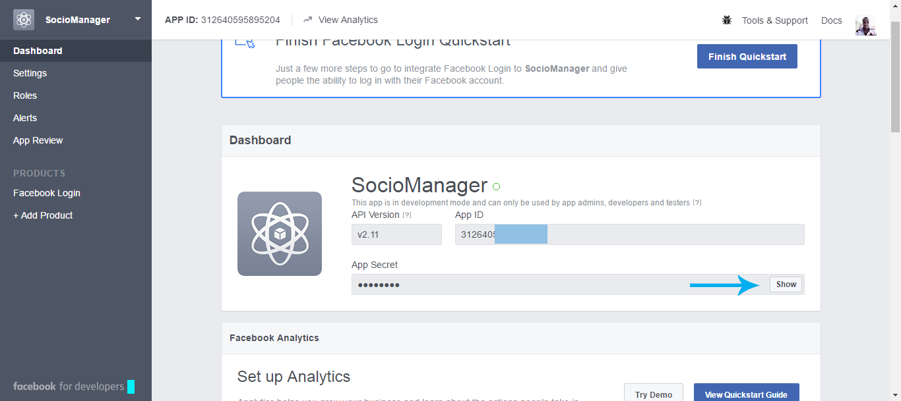 Copy the App ID and App Secret somewhere.
After completing the whole Setup Process, open the Settings Menu on your Script.
Click on the Facebook API Settings.
Input your App ID and Secret, then click on save.
-
Visit https://developers.facebook.com/apps to create a new app.
- Connecting With Twitter Kindly follow the steps below inorder to connect your script with twitter!
-
Visit https://apps.twitter.com/ to create a twitter App.
Click on Create App.
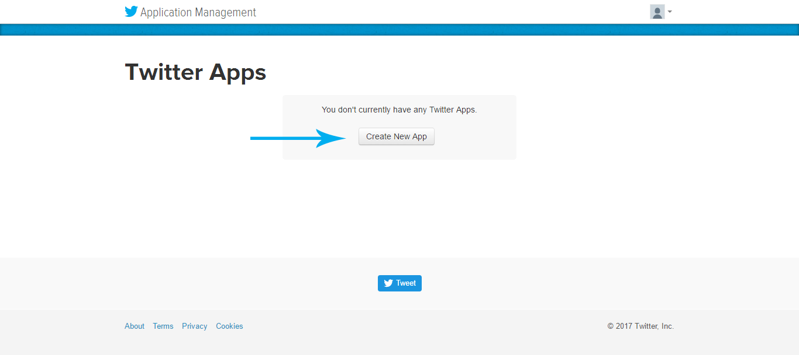 -
Input your basic details in the Name & Description
Input your script Domain in the Domain Box
Input the following in the Callback Url http://<your-domain>/twitter/callback
Click on Create.
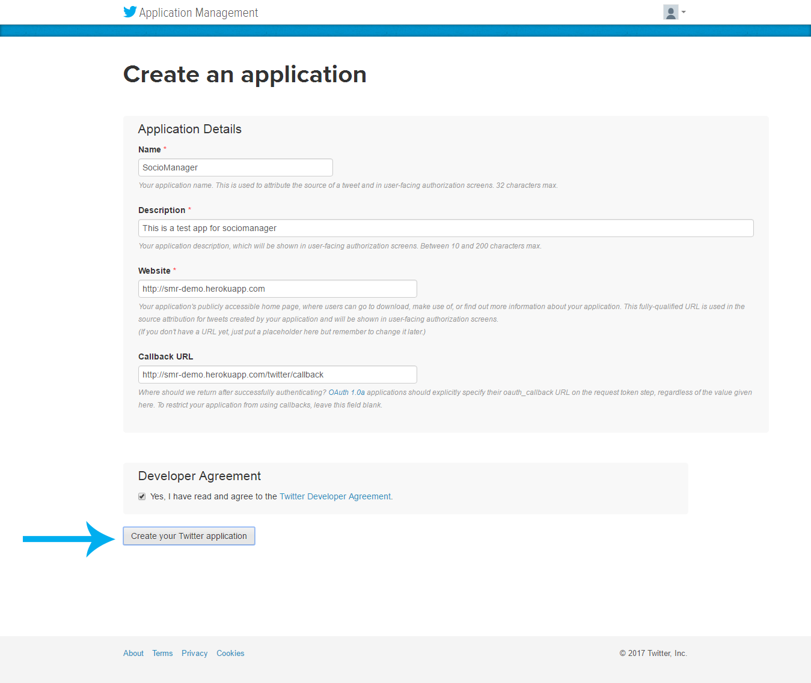 -
Now, you need to copy the Secret Details of your App.
Click on Keys & Access Token in the top navigation bar.
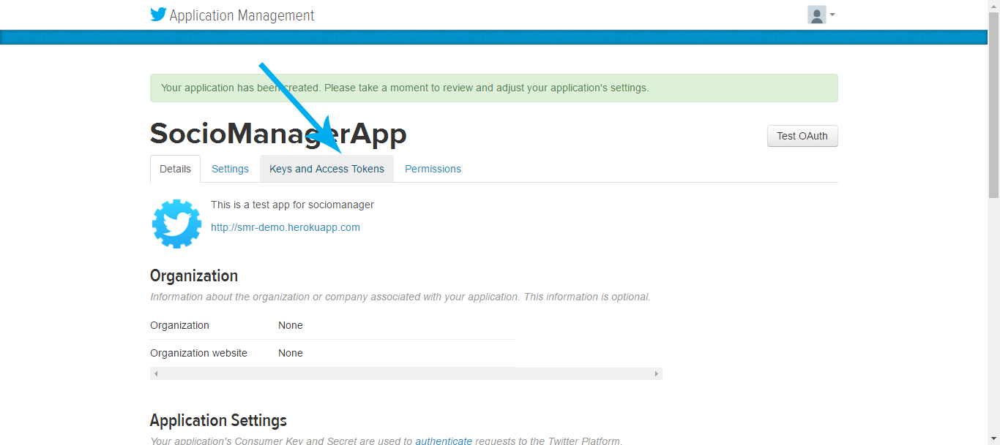
Copy the Consumer Key and Consumer Secret.
Directly below, you need to get your Access Token.
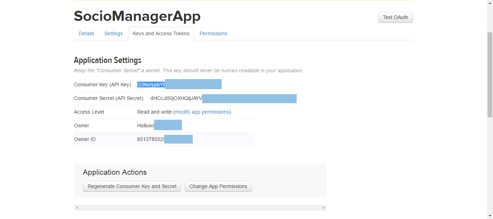
Copy the Access Token & Access Token Secret
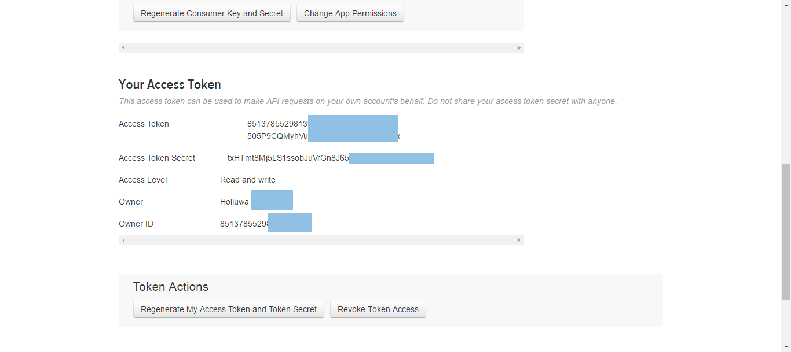
After completing the whole Setup Process, open the Settings Menu on your Script.
Click on the Twitter API Settings.
Input your Access Token, Access Token Secret, Consumer Key and Consumer Secret then click on save. -
Just a few step more, we need to set the permissions of the app.
Click on Permissions in the top navigation bar.
Select Read, Write and Access Direct Messages
Click on Save :)
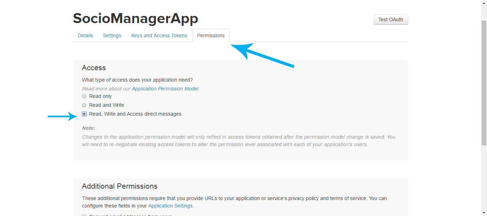
-
Visit https://apps.twitter.com/ to create a twitter App.
- Congratulations! You are all set. The following are the default login details.
- Email: admin@mail.com
- Password: 123456
Accepted Timezones (Table of Contents)
FAQ
-
Why is the scheduled job not being executed?
- Please refer to the last step above and make sure you have properly setup your Cron Job.
-
How can i translate to another language?
-
Make use of the support section to reach me, I can help with that. :)
License
Do not modify and resell/redistribute. You may edit the script for personal use only.